Capitulo 2
-Relações trigonométricas em um triângulo qualquer
169
As relações trigonométricas estudadas até aqui são válidas somente para os triângulos retângulos.
A seguir, veremos duas relações trigonométricas aplicadas a um triângulo qualquer.
Lei dos senos
Considere o triângulo ABC:
![Um triângulo ABC azul. O vértice A está ao centro e acima. A base BC tem o vértice B à esquerda e o vértice C, à direita. As medidas dos lados são representadas pelas letras a, b, c minúsculas, sendo a letra a o lado da base BC. A letra c é o lado AB. A letra b o lado AC. Um seguimento nominado de h1 é traçado entre o vértice A e de forma perpendicular a BC, no ponto de encontro tem ângulo reto. Um seguimento nominado de h2 é traçado entre o vértice A e de forma perpendicular a AC, no ponto de encontro tem ângulo reto. Alfa é o ângulo interno em A. Beta é o ângulo interno em B. θ é o ângulo interno em C.](../../resources/images/9ANO_U6-web-resources/image/26.png)
Em que:
- a, b e c são medidas dos lados do ΔABC;
- h1 é a medida da altura relativa ao lado BC;
- h2 é a medida da altura relativa ao lado ,AC;
- α é a medida do ângulo ;
- β é a medida do ângulo ;
- θ é a medida do ângulo .
Observe agora os triângulos ABH1 e ACH1:
![Um triângulo retângulo ABH1 azul. O ângulo reto está localizado no canto inferior direito, no vértice H1, formado pela junção dos dois catetos. O cateto AH1 é vertical com altura nomeada com a letra minúscula h e o número 1. O cateto BH1é a base do triângulo. O ângulo interno de B é nomeado de Beta. A letra c em minúsculo é a medida da hipotenusa AB.
Um triângulo retângulo ACH1 azul. O ângulo reto está localizado no canto inferior esquerdo, no vértice H1, formado pela junção dos dois catetos. O cateto AH1 é horizontal com altura nomeada com a letra minúscula h e o número 1. O cateto H1C é a base do triângulo. O ângulo interno de C é nomeado de Teta. A letra b em minúsculo é a medida da hipotenusa AC.](../../resources/images/9ANO_U6-web-resources/image/27.png)
170
sen β =
h1 = c ∙ sen β (I)
sen θ =
h1 = b ∙ sen θ (II)
Igualando (I) e (II), temos:
c ∙ sen β = b ∙ sen θ
=
Agora, observe os triângulos
e :
![Um triângulo retângulo CBH2 azul. O vértice H2 está acima e à direita. Ele tem o ângulo interno reto. O vértice B está à esquerda e forma a base do triângulo com o vértice C à direita. O lado BC é nomeado com a letra a minúscula. O lado BH2 com a letra h minúscula e o número 2.
Um triângulo retângulo ABH2 azul. O vértice H2 tem o ângulo interno reto, formado pela junção dos dois catetos. O cateto BH2 é nomeado com a letra minúscula h e o número 2. O cateto AB é nomeado com a letra minúscula c. O ângulo interno do vértice A é medido com o símbolo alfa.](../../resources/images/9ANO_U6-web-resources/image/28.png)
sen θ =
sen α =
h2 = c ∙ sen α (IV)
Igualando (III) e (IV), temos:
a ∙ sen θ = c ∙ sen α
=
171
Portanto:
Em um triângulo qualquer, a razão entre a medida de um lado e o seno do ângulo oposto a esse lado é uma constante. Ou seja, no ∆ABC
Com o auxílio de uma calculadora científica, calcule a medida do lado BC no triângulo ABC.
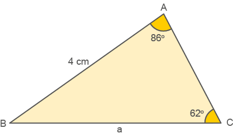
Além das quatro operações básicas, as calculadoras científicas apresentam outras funções, como seno 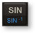, cosseno 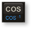 e tangente .
![Fotografia de uma calculadora científica com 4 linhas e 10 colunas. As teclas seno, cosseno e tangente são destacadas dentro de um retângulo vermelho. Seno na segunda linha, terceira coluna, representada pela tecla SIN em branco na parte de cima e SIN elevado a menos 1 em azul na parte debaixo. Cosseno, na segunda linha, quarta coluna, representado pela Tecla COS em branco na parte de cima e COS menos 1 em azul, na parte debaixo. Tangente, na segunda linha, quinta coluna, representado pela tecla TAN em branco na parte de cima e TAN menos 1 em azul, na parte debaixo.](../../resources/images/9ANO_U6-web-resources/image/Mat_9_ano_U5_p_149_calculadora_cient_fica_33.png)
172
Aplicando a lei dos senos, temos:
=
Considerando 3 casas decimais, os valores do seno para cada um dos ângulos são:
sen 86° = 0,998
sen 62° = 0,883
Portanto:
=
0,883 ∙ a = 4 ∙ 0,998
Utilizando a calculadora para os cálculos temos:
a ≅ 4,52 cm
A medida aproximada do lado BC é 4,52 cm.
Lei dos cossenos
Considere o triângulo ABC abaixo:
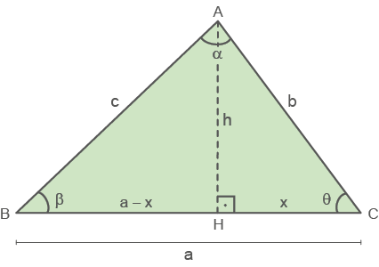
Em que:
- a, b e c são medidas dos lados do ΔABC;
- h é a medida da altura relativa ao lado BC;
- α é a medida do ângulo ;
- β é a medida do ângulo;
- θ é a medida do ângulo;
- a - x é a medida da projeção ortogonal do lado AB sobre o lado BC ;
- x é a medida da projeção ortogonal do lado AC sobre o lado BC .
173
Aplicando o Teorema de Pitágoras no ΔABH, temos:
c² = h² + (a - x)²
h² = c² - (a - x)² (l)
Aplicando o Teorema de Pitágoras no ΔACH, temos:
b² = h² + x²
h² = b² - x² (ll)
Igualando (I) e (II), temos:
c2 - (a - x)2 = b2 - x2
c2 = b2 - x2 + (a - x)2
c2 = b2 - x2 + a2 - 2ax + x2
c2 = b2 + a2 - 2ax (III)
No ∆ACH:
cos θ =
x = b ∙ cos θ (IV)
Substituindo (IV) em (III), obtemos:
c² = b² + a² - 2ab ∙ cos θ
De modo análogo, temos:
a² = b² + c² = 2bc ∙ cos α
b² = a² + c² = 2ac ∙ cos β
174
Observe a situação a seguir.
Uma estação de tratamento de água abastece as caixas-d’água dos bairros B e C de uma cidade, conforme mostra a ilustração. A companhia responsável pelo abastecimento de água quer fazer uma ligação direta entre as caixas-d’água desses bairros. Qual é a distância entre essas caixas?
![Ilustração de uma cidade com um triângulo no centro. Uma caixa-d’água com a letra C está localizada à esquerda e acima, representa o bairro C. A caixa-d’água com a letra B, à direita e acima, representa o bairro B. Na parte de baixo, o reservatório da cidade. O triângulo no centro liga as duas caixas-d’água e o reservatório. Um seguimento horizontal liga C com B. A distância entre elas é medida com a letra a minúscula. Entre C e o reservatório a distância é de 5km. Entre B e o reservatório 8km. O ângulo interno na região do reservatório tem 60 graus.](../../resources/images/9ANO_U6-web-resources/image/Mat-9A_U5_09.png)
Aplicando a lei dos cossenos, temos:
a2 = b2 + c2 - 2bc ∙ cos a
a2 = 52 + 82 - 2 ∙ 5 ∙ 8 ∙ cos 60°
a2 = 25 + 64 - 80 ∙
a2 = 49
a = ± √49
a = ± 7
a1 = +7 ou a2 = -7 (não convém)
A distância entre as duas caixas-d’água é de 7 km.
175
- Calcule a distância aproximada entre a casa de Carlos e a de Juca.
- Com um pedaço de cartolina, Mariana fez a seguinte figura:
- Calcule a medida x dos lados dos triângulos a seguir:
- Observe as horas indicadas pelos ponteiros do relógio representado a seguir: 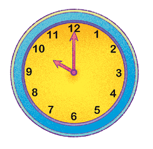
- O ponteiro menor desse relógio mede 10 cm, e o ponteiro
maior,
16 cm. Qual é a distância entre as extremidades dos ponteiros? - No paralelogramo a seguir, determine a medida da diagonal AC.
- Num triângulo ABC, dois ângulos medem 30º e 60º. O lado oposto ao ângulo de 30º mede 20 cm. Determine a medida do lado oposto ao ângulo de 60º.
- (CESGRANRIO) Os lados de um triângulo são 2, 3 e 6. O cosseno do
maior
ângulo interno desse triângulo vale:
- -
- -
![Ilustração de um bairro com um triângulo no centro. A Casa de Juca está à esquerda e acima. A casa de Leonardo à direita e acima. A casa de Carlos abaixo. O triângulo no centro liga as três casas: um seguimento horizontal entre as casas de Juca e Leonardo. Dois seguimentos diagonais saem da Casa de Carlos: uma em direção à Casa de Juca e outra em direção à casa de Leonardo. O ângulo interno na Casa de Carlos é de 62 graus. O ângulo interno na Casa de Leonardo é de 41 graus. A distância entre a casa de Leonardo e Juca é de 4 km.](../../resources/images/9ANO_U6-web-resources/image/Mat-9A_U5_10.png)
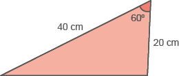
Determine a medida do terceiro lado dessa figura.
a)
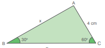b)
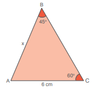c)
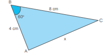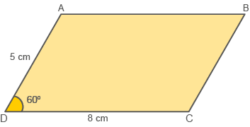
176
Realizando uma pesquisa amostral
Vamos realizar uma pesquisa amostral na sua escola e levantar informações para análise
Reúna-se com um colega e escolha um tema atual relacionado à realidade social. Para isso, sigam estas etapas:
- Planejamento - definam o assunto, as perguntas a serem feitas, a população e como será a amostragem;
- Coleta de dados - apliquem o questionário do planejamento para os indivíduos de acordo com a amostra escolhida;
- Organização - organizem os dados obtidos em tabelas ou gráficos construídos em uma planilha eletrônica. Calculem os valores de medidads de tendência central e de dispersão.
- Análise e interpretação - elaborem um relatório explicando qual é o tema e o processo de execução. Incluam a tabela, os gráficos que vocês construíram, os valores das medidas de tendência centrale de dispersão que vocês calcularam e suas conclusões.
- (FURB-SC) Analise as seguintes afirmações:
- Todo triângulo é retângulo.
- O Teorema de Pitágoras só pode ser aplicado em triângulo retângulo.
- A soma das medidas dos ângulos internos de um triângulo qualquer é sempre 180°.
- As leis dos senos e dos cossenos podem ser aplicadas somente em um triângulo retângulo.
- As afirmações I e IV estão corretas.
- As afirmações II e III estão corretas.
- Apenas a III está correta.
- Apenas a I está correta.
- (Saresp) Observe as medidas do triângulo retângulo ABC. Podemos dizer que:
Indique as alternativas corretas:
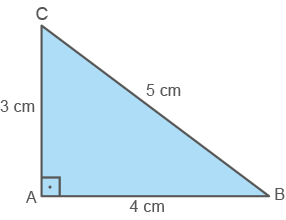
a) tg =
b) tg =
c) sen =
d) tg =
e) cos =
177
3. (PUC-BA) Na figura abaixo, tem-se um trapézio isósceles cujos lados têm as medidas indicadas. A medida do ângulo assinalado é:
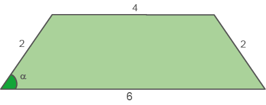
- 60°
- 45°
- 30°
- 22° 30’
- 15°
4. Do topo de um edifício A, um observador avista a base de outro edifício, B, segundo um ângulo de 60°, e o seu topo, segundo um ângulo de 30°, conforme figura abaixo. Sendo 60√3 m a distância entre os dois edifícios, determine a altura do edifício B.
![Ilustração de dois edifícios. O da esquerda é maior que o da direita. Entre os edifícios, duas casas e a figura de um triângulo isósceles. A base do triângulo é a altura do edifício maior. Duas linhas diagonais partem do edifício maior em direção a um mesmo ponto do edifício menor, formando o triângulo. Uma linha sai do topo do edifício e a outra da base dele. Ambas em direção ao topo do edifício menor. Uma linha tracejada na horizontal divide o triângulo ao meio, formando dois triângulos. O de cima tem um ângulo interno de 30 graus. O de baixo um ângulo externo de 60 graus.](../../resources/images/9ANO_U6-web-resources/image/Mat-9A_U5_121.png)
5. (Unicamp) Uma ponte levadiça, com 50 metros de comprimento, estende-se sobre um rio. Para dar passagem a algumas embarcações, pode-se abrir a ponte a partir de seu centro, criando um vão AB, conforme mostra a figura a seguir. Considerando que os pontos A e B têm alturas iguais, não importando a posição da ponte, se o tempo gasto para girar a ponte em 1º equivale a 30 segundos, qual será o tempo necessário para elevar os pontos A e B a uma altura de 12,5 m, com relação à posição destes quando a ponte está abaixada?
![Figura com dois cones, um à esquerda e o outro à direita. Entre eles o rio com medida igual a 50 metros. Acima do rio, uma ponte levadiça dividida ao meio e levantada para cima. A metade da ponte à esquerda é contém o ponto A. A outra metade, à direita contém o B. Entre elas uma indicação de medida nominada de AB. Um seguimento tracejado acima do rio liga a base da ponte que contém o ponto A com a base da ponte que contém o B, formando um ângulo Alfa com a parte da ponte que contém o ponto A e outro ângulo alfa com a parte da ponte que contém B.](../../resources/images/9ANO_U6-web-resources/image/42.png)
- 15 minutos.
- 20 minutos.
- 25 minutos.
- 30 minutos.
- 40 minutos.
6. Um triângulo MNP é retângulo em M. Se o cosseno do ângulo P é igual a , determine o cosseno do ângulo N.
178
7. (UFPA) A figura a seguir representa um barco atravessando um rio, partindo de A em direção ao ponto B. A forte correnteza arrasta o barco em direção ao ponto C, segundo um ângulo de 60°. Sendo a largura do rio de 120 m, a distância percorrida pelo barco até o ponto C é:
![Figura de duas linhas paralelas horizontais e marrons com um triângulo retângulo ABC entre elas. As linhas paralelas representam as marguem dos rios. Na primeira linha paralela, na parte de cima, está a base do triângulo BC. O vértice B é o ângulo reto e está à esquerda. O vértice C à direita. O cateto menor em uma linha vertical liga B com o vértice A, na segunda linha marrom. O ângulo interno em A é de 60 graus A hipotenusa é o lado AC, representando o rio com um retângulo vermelho próximo ao vértice A, representando o barco.](../../resources/images/9ANO_U6-web-resources/image/43.png)
- 240√3 m
- 240 m
- 80√3 m
- 80 m
- 40√3 m
8. (PUC-SP) Leia com atenção o problema proposto a Calvin na tira seguinte.
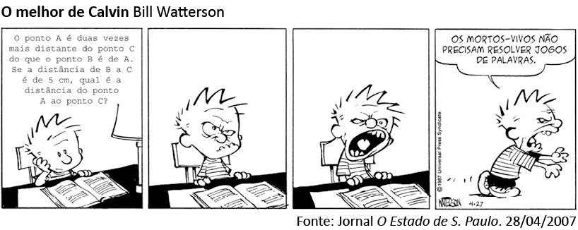
Supondo que os pontos A, B e C sejam vértices de um triângulo cujo ângulo do vértice A mede 60°, então a resposta correta que Calvin deveria encontrar para o problema é, em centímetros:
a)
b)
c)
d) 5√3
d) 10√3
- 0,75
- 1,25
- 0,25
- 1,75
9. (IFMG) O triângulo ABC é retângulo em A. Se o seno do ângulo B é 0,8, qual o valor da tangente do ângulo C?
179
10. (PUC-SP) Qual o valor de x na figura?
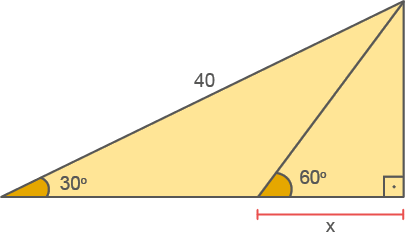
a)
b)
c)
d)
c)
11. (Saresp) O teodolito é um instrumento utilizado para medir ângulos. Um engenheiro aponta um teodolito contra o topo de um edifício, a uma distância de 100 m, e consegue obter um ângulo de 55°, conforme a figura abaixo.
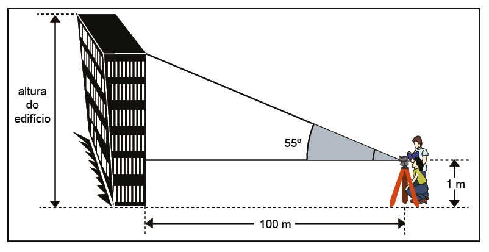(Dados: sen 55º = 0,82, cos 55º = 0,57, tg 55º = 1,43)
A altura h do edifício é, em metros, aproximadamente
- 58 m
- 83 m
- 115 m
- 144 m